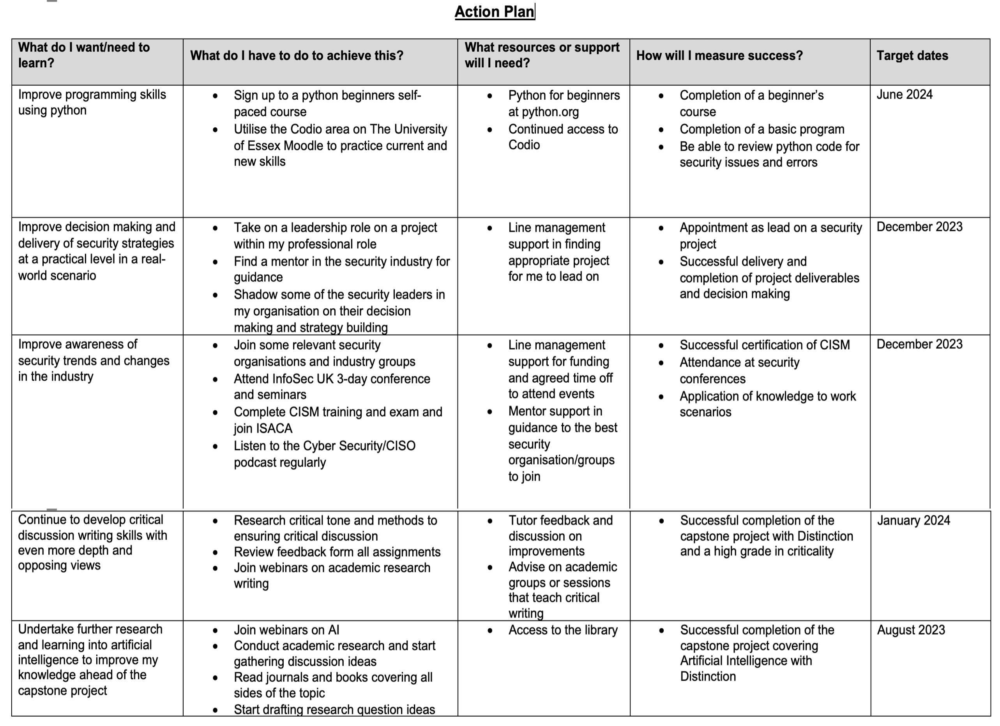

Unit 12
Final Reflection
Reflections are most effective when structured to show identification of the learning process (Kathpalia & Heah, 2008). Therefore, Gibbs’ Reflective Cycle (1988) has been used as a guide to ensure each area of the reflection is covered (Adeani et al, 2020).
Description
The Research Methods and Professional Practice module provided a deeper learning into skills required for conducting thorough research on a topic and the methodologies and data collection techniques that can be used. The module required the student to take areas of knowledge from previous modules and apply the techniques learnt throughout to demonstrate knowledge of research methods.
The content progression was fast paced with various formative and summative activities throughout to compliment the learning topics. There was particular focus on the computing ethics of using technologies (Johnson & Miller, 2004) and the code of conducts put in place by the ACM (2018) and BCS (2022) to guide computing professionals along with data privacy issues regarding consent and how data can be used (Dawson, 2015). Towards the end of the module there was a focus on statistical inference to analysis datasets to make valid observations on what the data is evidencing and the validity of how data is presented (Gelman, 2018).
For the summative assignments I completed a literature review of the ‘Gender Pay Gap in the UK technology sector,’ as a topic I already had knowledge of, and then chose a research proposal presentation on whether ‘Artificial Intelligence could be used to prevent Phishing’ which was a new area of research for me. Both assignment formats were demanding due to the the heavy reliance on in-depth research and criticality with the addition of having to define my own research questions and discussion topics.
Feeling
I was very excited to start this module as it offered a new challenge and learning opportunities to any that had been studied before. I have always felt my strengths were in my written work and presentation skills, as demonstrated in my SWOT analysis, therefore felt this would be a module I could excel at. By unit 3 I was starting to feel overwhelmed by the volume of activities required as well as completing preparation for the summative however I knew the time spent on the ePortfolio articles throughout would be worth it when it came to the final weeks.
I thoroughly enjoyed the process of researching for both summative assignments as they allowed me to focus on areas of interest and demonstrate my ability to structure a logical argument. However, on receipt of the literature review feedback I was disappointed with my overall grade having been happy with the work submitted. Though I felt my confidence had been knocked, I utilised all feedback to make significant improvements for the research proposal which resulted in an overall grade I was proud of.
Evaluation
One of the areas that went well throughout this module was the structure of all assignments using strong presentation skills to ensure all my work was clear, concise and well formatted. This is a strength I have identified through this course and one I have used to ensure high marks in this area.
Whilst there was a lot of content to cover in the timeframe, some areas required more independent learning to gain a better understanding. I found the earlier modules covering ethics and privacy straight forward due to data privacy being an area of strength in my profession, as shown in my professional skills matrix, therefore I did not have to spend as much time on this topic. However, the statistical inference and hypotheses testing content required much more dedicated time and wider reading to grasp of these concepts, this was difficult due to these being covered in unit 8 and 9 where there were also collaborative discussions and the research proposal to be completed, due to the challenge of this topic it could have been taught earlier in the module to give students more time to develop the skills.
A further challenge of this module was choosing a research topic for the proposal rather than having one provided. Whilst this highlighted one of my weaknesses, that I was not up to date on current security trends, it forced me to delve into areas of interest and trending topics that would provide recent and relevant literature. I was successful in choosing a topic that discussed new areas of technology in security and provided me with the opportunity to add to my knowledge.
Analysis
Although this module was extremely difficult to navigate with a lot of deliverables in a short space of time, the pace of the module pushed me to work harder and not get behind on workload meaning I achieved a lot in the 12 weeks. By focusing on the areas that were new to me and less time on elements I already understood, I was able to manage my time effectively. The content of the module has been instrumental in preparing me for the capstone project but the knowledge around research methods, quantitative and qualitative data must be carried forward to any primary research carried out in future which has not been practiced in this module.
Although I performed well in some areas of both assignments, this module highlighted gaps in my criticality, an area I had previously seen as a strength. Whilst I was not expecting to have to work on this skill in this module, it is always an area that can be improved and by the research proposal summative I had significantly improved the critical tone and discussion of my written work. Whilst I am pleased to have the opportunity to take the corrective action, this is a key area for research writing in which this module prepares the student for, therefor there is further work to be done on this skill to ensure future success.
Conclusion
Overall, the content throughout this module was relevant and helped strengthen my skills as a security professional and research student. I have evidenced strong presentation skills as well as the ability to take feedback and improve for future work. While there have been strengths demonstrated throughout this module, there are still some identified weaknesses and threats to improve on throughout my professional development, but the knowledge built throughout this module will be key for progression onto the capstone project.
Action Plan
The action plan has been based on all the learnings and reflective activities throughout including the professional skills matrix and SWOT analysis and the individual action plans made following the evaluation of both summative assignments.

References
ACM, (2018). ACM Code of Ethics and Professional Conduct. ACM Ethics. Available at: https://ethics.acm.org. [Accessed 28th May 2023]
Adeani, I.S., Febriani, R.B. and Syafryadin, S., (2020). USING GIBBS’REFLECTIVE CYCLE IN MAKING REFLECTIONS OF LITERARY ANALYSIS. Indonesian EFL Journal, 6(2), pp.139-148.
BCS, (2022). Code of Conduct for BCS Members. BCS, The Chartered Institute for IT. Available at: https://www.bcs.org/media/2211/bcs-code-of-conduct.pdf. [Accessed 28th May 2023].
Dawson, C. (2015) Projects in Computing and Information Systems: A Student's Guide. Harlow: Pearson.
Gelman, A., (2018). Ethics in statistical practice and communication: Five recommendations. Significance, 15(5), pp.40-43.
Gibbs G (1988). Learning by Doing: A guide to teaching and learning methods. Further Education Unit. Oxford Polytechnic: Oxford.
Johnson, D.G. and Miller, K., (2004). Computer ethics. Academy & the Internet, 12, p.143.
Kathpalia, S.S. and Heah, C., (2008). Reflective writing: Insights into what lies beneath. Relc Journal, 39(3), pp.300-317.